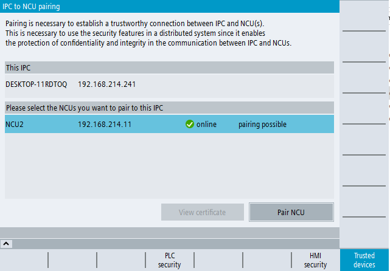

Pairing is required to establish a trustworthy connection between an IPC and an NCU or several NCUs. This is necessary to use security functions in a distributed system because it enables protection of confidentiality and integrity in communication between the IPC and NCU. This makes misuse of data of the NCU simply by replacing the IPC impossible.
Only one IPC can enter into a trust relationship with one (1:1) or more NCU(s) (1:N).
| Note |
Pairing for IPC systems onlyPairing only has to be performed if an IPC is installed in your SINUMERIK system. |
| Notice |
Functional restrictions without pairingIf you do not establish a relationship of trust between the two components in a distributed system comprising an IPC and NCU in advance, you must expect the following functional restrictions:
For this reason, always previously pair the IPC with the trusted NCU to be able to use these SINUMERIK security functions. |
| Note |
Only one instance of SINUMERIK OperateIn a distributed system with IPC and NCU, only one instance of SINUMERIK Operate is permitted.
|
With active user management: You have the role "Security Admin" or access level 2 (service).
OR
Without active user management: You have at least access level 3 (user).
SINUMERIK Operate on the IPC must already have a connection to the NCU or NCUs to be paired.
If you want to pair an NCU with the IPC, you can configure the NCU via SINUMERIK Operate:
In the "Setup" operating area, select the softkeys "HMI > vertical progress bar > NCU link" and enter the IP address or the DNS name of the NCU.
Then start the pairing overview page via the softkeys "Security > Trusted devices".
If you want to pair several NCUs with the IPC, you can configure the NCUs via the "mmc.ini" file:
You will find the file "mmc.ini" at the following path:
C:\Program Files (x86)\Siemens\MotionControl\user\sinumerik\hmi\cfg\mmc.ini
or
C:\Program Files (x86)\Siemens\MotionControl\oem\sinumerik\hmi\cfg\mmc.ini
The following is an example configuration of multiple NCUs in the "mmc.ini".
Enter the required data for the NCUs in the "mmc.ini" file, as shown in the example.
Then start the pairing overview page via the softkeys "Security > Trusted devices".
Example configuration of 3 NCUs via the "mmc.ini" file |
|---|
| [Global] NcddeMachineNames=NCU1,NCU2,NCU3 NcddeDefaultMachineName=NCU1 [NCU1] ADDRESS0=192.168.214.1,LINE=14,NAME=/NC,SAP=040d,PROFILE=CLT1__CP_L4_INT ADDRESS1=192.168.214.1,Line=20,NAME=/PLC,MAX_BUB_CYCLICS=1000 ADDRESS2=192.168.214.1,LINE=14,NAME=/CP,SAP=0502,PROFILE=CLT1__CP_L4_INT ADDRESS10=192.168.214.1,LINE=14,NAME=/DRIVE_00_000,SAP=0201,SUBNET=0000-00000000:000,PROFILE=CLT1__CP_L4_INT ADDRESS11=192.168.214.1,LINE=14,NAME=/DRIVE_03_003,SAP=0900,PROFILE=CLT1__CP_L4_INT [NCU2] ADDRESS0=192.168.214.2,LINE=14,NAME=/NC,SAP=040d,PROFILE=CLT1__CP_L4_INT ADDRESS1=192.168.214.2,Line=20,NAME=/PLC,MAX_BUB_CYCLICS=1000 ADDRESS2=192.168.214.2,LINE=14,NAME=/CP,SAP=0502,PROFILE=CLT1__CP_L4_INT ADDRESS10=192.168.214.2,LINE=14,NAME=/DRIVE_00_000,SAP=0201,SUBNET=0000-00000000:000,PROFILE=CLT1__CP_L4_INT ADDRESS11=192.168.214.2,LINE=14,NAME=/DRIVE_03_003,SAP=0900,PROFILE=CLT1__CP_L4_INT [NCU3] ADDRESS0=192.168.214.3,LINE=14,NAME=/NC,SAP=040d,PROFILE=CLT1__CP_L4_INT ADDRESS1=192.168.214.3,Line=20,NAME=/PLC,MAX_BUB_CYCLICS=1000 ADDRESS2=192.168.214.3,LINE=14,NAME=/CP,SAP=0502,PROFILE=CLT1__CP_L4_INT ADDRESS10=192.168.214.3,LINE=14,NAME=/DRIVE_00_000,SAP=0201,SUBNET=0000-00000000:000,PROFILE=CLT1__CP_L4_INT ADDRESS11=192.168.214.3,LINE=14,NAME=/DRIVE_03_003,SAP=0900,PROFILE=CLT1__CP_L4_INT |
In the upper part of the overview page, you can see the name and IP address of the IPC. The lower part shows the configured NCUs and their online/offline status, the encryption status of the SD card and the pairing status of the NCU.
Pairing communication and status display
The following status displays of the pairing status are possible:
Pairing status | Description |
|---|---|
Pairing possible | Pairing with this NCU is possible. The "Pair NCU" softkey is active. |
Not in pairing mode | Pairing with this NCU is not possible. The "Pair NCU" softkey is not active. This status is displayed when the installed software version of the NCU is too old so that pairing cannot be performed as a function or if the NCU is offline. |
Paired | The IPC is already paired with this NCU. The "Unpair NCU" softkey is active. |
Paired to different IPC | This NCU has already been paired with another IPC. You must first unpair the NCU from another IPC before you can pair the NCU with the present IPC again. |
Paired but replaced | This NCU was originally correctly configured and paired. However, in the meantime the paired NCU was replaced. The NCU is offline. You have the option of deleting the NCU, which in the meantime has been replaced, from the overview using the "Delete entry" button. |